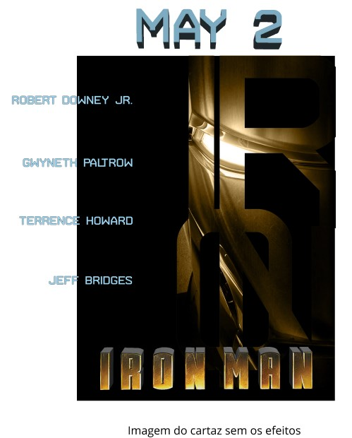
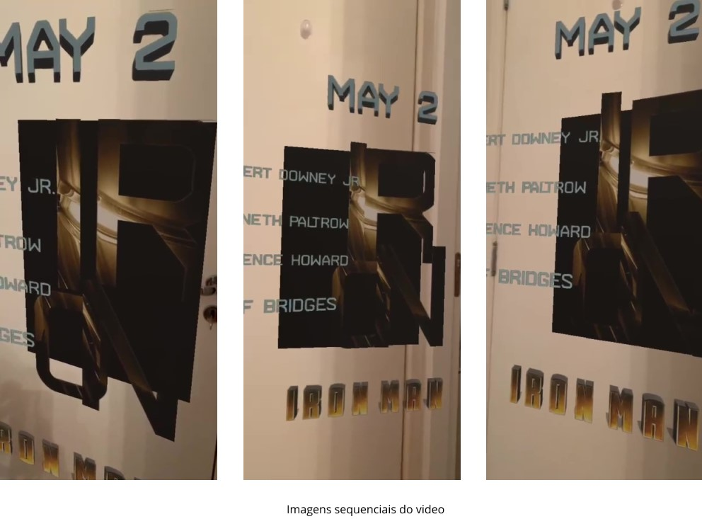

O objetivo deste trabalho academico foi recriar um cartaz de cinema usando um melhor conceito e
tipografia.
Escolhi fazer o cartaz do filme Iron Man, por que além de poder brincar com a tipografia ainda podia
fazer com que este cartaz fosse interativo, usando holografia e realidade aumentada.
O cartaz foi feito no Photoshop e reproduzido do Abode Aero.

